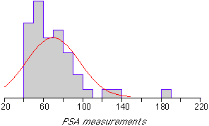

Applying the general properties of p-values to different tests
The properties of p-values (and hence their interpretation) have been demonstrated in the context of a hypothesis test about whether a population mean was zero.
P-values for all hypothesis tests have the same properties. As a result, we can interpret any p-value if we know the null and alternative hypotheses that it tests, even if we do not know the formulae that underlies it. (In practice, a statistical computer program is generally used to perform hypothesis tests, so knowledge of formulae is of little importance.)
In particular, for any test where the null hypothesis restricts a parameter to a single value,
| p-value | Interpretation |
|---|---|
| over 0.1 | no evidence that the null hypothesis does not hold |
| between 0.05 and 0.1 | very weak evidence that the null hypothesis does not hold |
| between 0.01 and 0.05 | moderately strong evidence that the null hypothesis does not hold |
| under 0.01 | strong evidence that the null hypothesis does not hold |
Another type of test
The normal distribution is often used as a hypothetical population from which a set of data are assumed to be sampled. But are the data consistent with an underlying normal population, or does the population distribution have a different shape?
One popular test for assessing whether a random sample come from a normal population is the Shapiro-Wilkes W test. The theory behind the test is advanced and the formula for the p-value cannot be readily evaluated by hand. However most statistical programs will perform the test.
A random sample of 40 values from a normal population is displayed in a jittered dot plot on the left of the diagram. The p-value for the Shapiro-Wilkes W test is shown under the dot plot and also graphically on the right.
Click Take sample a few times to take more samples and build the distribution of the p-values for the test. You should observe that the p-values have a rectangular distribution between 0 and 1 when the null hypothesis is true (i.e. if the samples are from a normal distribution).
Drag the slider on the top left of the diagram to change the shape of the population distribution. Repeat the exercise above and observe that when the null hypothesis does not hold, the p-values tend to be closer to 0.
Click on crosses on the display of p-values in the bottom right to display the sample that produced that p-value. P-values near zero usually correspond to samples that have very long tails to one or both sides, or have very short tails to one or both sides.
PSA measurements
As a numerical example, consider the following data set which gives measurements of serum acid phosphatase (PSA) for 53 patients who were diagnosed as having prostate cancer.
48 56 50 52 50 49 46 62 56 55 62 71 |
 |
The best-fitting normal distribution (with mean and standard deviation equal to those of the data) has been superimposed on the histogram. Could the impression of skewness have occurred by chance?
Applying the Shapiro-Wilkes W test to the data using the statistical program SAS gives a p-value '0.0001'. We therefore conclude that the probability of obtaining such a non-normal looking sample from a normal distribution is 0.0001, so there is extremely strong evidence that the data do not come from a normal population.
Even if the highest three values in the data set are omitted, the p-value for the Shapiro-Wilkes test is still 0.0039, so even without these values there is still strong evidence of skewness in the remainder of the data.
You should be able to interpret p-values that computer software provides for a wide variety of hypothesis tests using the properties that we have described in this section.